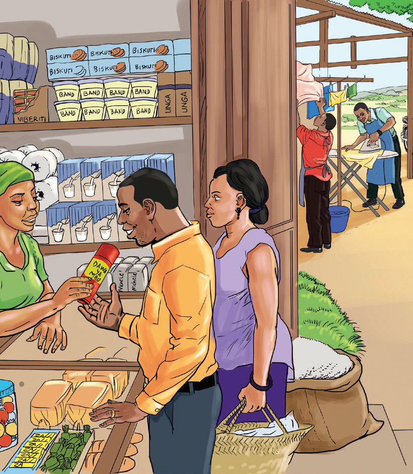
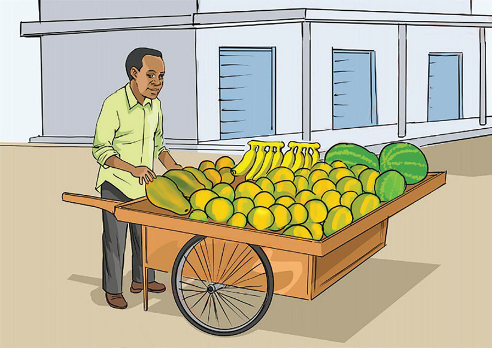
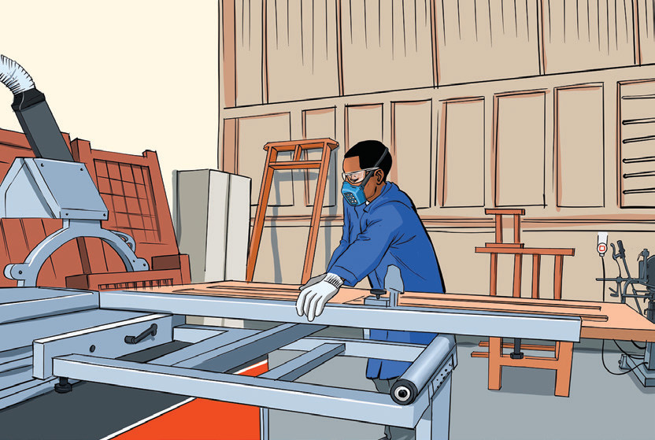

Business activities involve the processes that an organisation engages in, to achieve its goals. These processes are production, distribution, exchange and consumption. They are explained as follows:
This is a process of transforming raw materials into finished products to satisfy human needs and wants. For example, a tailor transforms a fabric into a type of a cloth such as a trouser, shirt, dress or curtains.
This is a process of moving goods and services from where they are produced to where they are needed for consumption. For example, the transportation of manufactured sugar from Mtibwa Sugar Company in Morogoro Region to wholesalers, retailers or consumers located in various regions of Tanzania or to other countries.
This involves buying and selling of goods and services between two or more parties. It involves the use of several means of payments, including money. Exchange enables consumers to consume items they do not produce and producers to produce what they do not consume. For example, a tailor can produce clothes for selling and not for his or her own consumption while consuming sugar produced by a sugar manufacturing company.